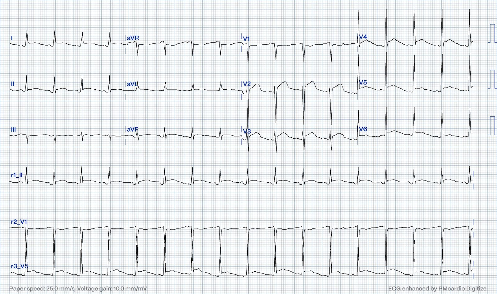
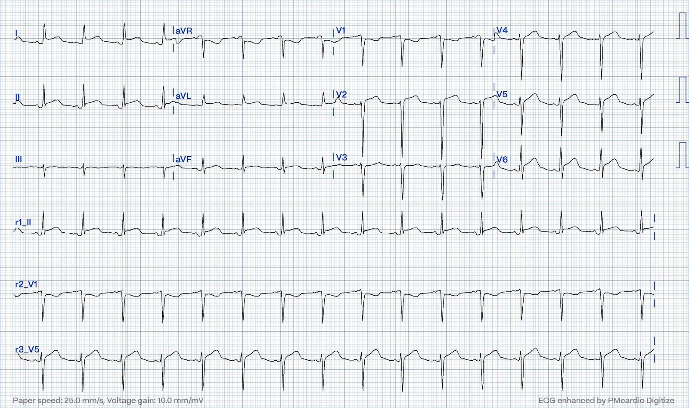
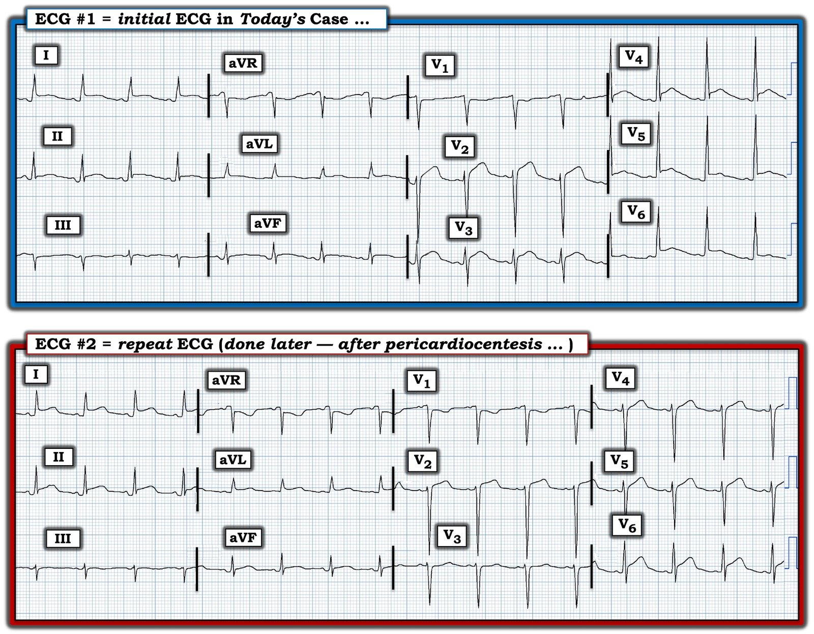
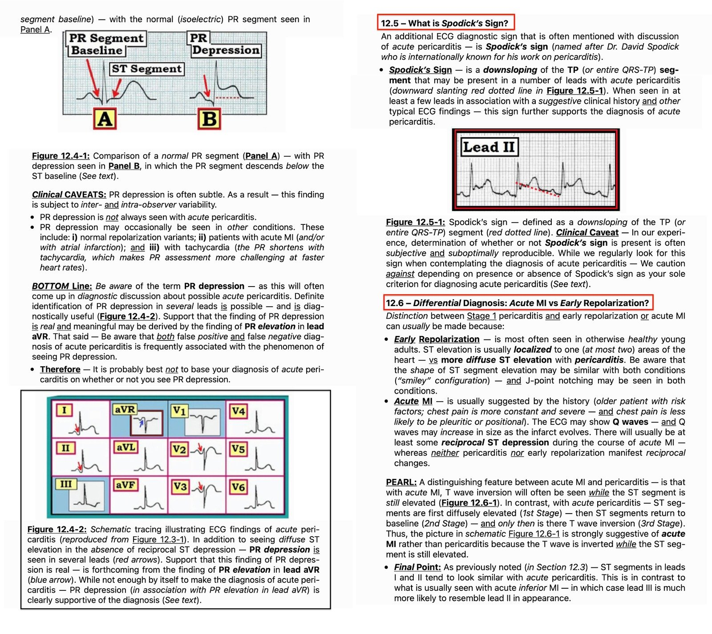

04/08/2024 — Điện tâm đồ này cho thấy gì?
Bản dịch tiếng Việt của bài "What does this ECG show?" – Dr. Smith’s ECG Blog. Giữ nguyên toàn bộ 10 hình ảnh của bản gốc.
Tác giả: Pendell Meyers
Trước tiên, hãy thử đọc điện tâm đồ mà không có bất kỳ bối cảnh lâm sàng nào:


Nhịp xoang với ST chênh lên bất thường ở V2-V6, và I, II, aVF. ST chênh xuống soi gương ở aVR và V1. Phần lớn các chuyển đạo có ST chênh lên có sóng T dẹt, hoàn toàn không mang tính tối cấp một cách đáng chú ý. Đa số sẽ nói rằng có dấu hiệu Spodick. Đoạn PR chênh xuống ở II (và đoạn PR chênh lên soi gương ở aVR) có lẽ vượt quá giá trị đường nền bình thường. Nhìn chung, theo ý kiến của tôi, đây có vẻ là một trong những điện tâm đồ hiếm hoi thực sự đặc hiệu cho viêm màng ngoài tim. Không có điện tâm đồ cũ để so sánh. Đáng lưu ý, có thể cho là có biến dạng phần cuối QRS ở V4-V6.
Queen of Hearts (QOH) phiên bản 1 và 2 đều cho kết quả Không phải OMI, với độ tin cậy cao, khi không có bất kỳ bối cảnh lâm sàng nào, mặc dù ST chênh lên bất thường đạt tiêu chuẩn STEMI.
Tôi gửi điện tâm đồ này cho nhóm chúng tôi mà không kèm thông tin gì và bác sĩ Smith trả lời: “Không phải OMI. Có thể là viêm màng ngoài tim.”
Bối cảnh: một người đàn ông ở độ tuổi 40 đến khoa cấp cứu vì đau ngực khởi phát đột ngột 1 ngày. Hai tuần trước, ông bị một tai nạn xe cơ giới (MVC) nghiêm trọng với nhiều chấn thương nặng, bao gồm tổn thương động mạch chủ đã được sửa chữa nội mạch.
Siêu âm tim cho thấy tràn dịch màng ngoài tim lượng lớn mới xuất hiện kèm khối máu tụ khu trú lớn ở màng ngoài tim phía sau, gần động mạch chủ ngực xuống/mép stent graft động mạch chủ ngực đặt nội mạch (TEVAR). Chụp CT mạch máu cho thấy TEVAR ổn định, không có biến chứng. Theo dõi siêu âm tim liên tiếp cho thấy áp lực màng ngoài tim tăng dần nhưng không có sinh lý chèn ép tim rõ ràng. ESR và CRP đều tăng rất cao. Các xét nghiệm troponin độ nhạy cao liên tiếp đều âm tính. Đã tiến hành chọc dịch màng ngoài tim. Bệnh nhân đồng thời được điều trị bằng colchicine và NSAID.
Đây là một điện tâm đồ khác được ghi sau đó:


Bệnh nhân hồi phục tốt.

===================================
BÌNH LUẬN CỦA TÔI, bởi KEN GRAUER, MD (4/8/2024):
===================================
Tôi cho rằng ca hôm nay của bác sĩ Meyers là một ca quan trọng đối với những người làm cấp cứu vì nhiều lý do. Những lý do này bao gồm:
- i) Ca hôm nay cung cấp một ví dụ về một điện tâm đồ ban đầu mà theo lời bác sĩ Meyers — “là một trong những điện tâm đồ hiếm hoi thực sự đặc hiệu cho viêm màng ngoài tim”. Thực tế lâm sàng là tuyệt đại đa số các ca trong Dr. Smith’s ECG Blog, trong đó viêm màng ngoài tim cấp được cân nhắc mạnh mẽ là chẩn đoán dựa trên các dấu hiệu điện tâm đồ — rốt cuộc lại không phải do viêm màng ngoài tim.
- ii) Ca hôm nay nhấn mạnh tầm quan trọng của bệnh sử trong chẩn đoán viêm màng ngoài tim.
- iii) Cuối cùng — 2 điện tâm đồ hôm nay giúp hiểu sâu hơn về nghệ thuật so sánh các bản ghi liên tiếp.
Để rõ ràng và dễ so sánh, trong Hình 1 — tôi đã đặt cạnh nhau 2 điện tâm đồ của ca hôm nay.
- LƯU Ý: Để tham khảo — tôi đã thêm bên dưới một PHẦN BỔ SUNG trích từ Bình luận của tôi trong bài ngày 16 tháng Năm năm 2023 trên Dr. Smith’s ECG Blog, tóm tắt “Quan điểm của tôi” về những cân nhắc chẩn đoán viêm màng ngoài tim.


Các dấu hiệu viêm màng ngoài tim cấp trên điện tâm đồ #1:
Như bác sĩ Meyers đã nói — ngay cả khi không có bệnh sử, điện tâm đồ #1 gần như đủ để chẩn đoán viêm màng ngoài tim cấp. Các tiêu chuẩn điện tâm đồ ủng hộ chẩn đoán này (được điểm lại trong PHẦN BỔ SUNG bên dưới) bao gồm:
- Có ST chênh lên lan tỏa (thấy ở 9/12 chuyển đạo) — các chuyển đạo duy nhất không có ST chênh lên là các chuyển đạo phía bên phải III, aVR và V1.
- Có đoạn PR chênh xuống rõ rệt ở nhiều chuyển đạo (thấy rõ nhất ở các chuyển đạo I,II,aVF) — cùng với đoạn PR chênh lên ở chuyển đạo aVR.
- Sóng ST-T ở chuyển đạo II giống chuyển đạo I hơn là chuyển đạo III (trong khi điều ngược lại đúng với nhồi máu cơ tim cấp thành dưới).
- Không có sóng Q nhồi máu.
- ST chênh lên không khu trú, như thường thấy trong nhồi máu cơ tim cấp. Có lẽ ngoại trừ chuyển đạo V2 — không có hình dạng sóng T tối cấp điển hình của nhồi máu cơ tim cấp. Thay vào đó (như bác sĩ Meyers đã nói) — phần lớn sóng T dẹt một cách đáng chú ý (và hình dạng sóng ST-T ở chuyển đạo V2 có thể là hậu quả của “tăng gánh” thất trái ở một chuyển đạo phía trước của một bệnh nhân có điện thế đạt tiêu chuẩn LVH).
- Sóng T không đảo ngược ở các chuyển đạo có ST chênh lên (trong khi điều ngược lại thường xảy ra trong nhồi máu cơ tim cấp).
- Có dấu hiệu Spodick.
- Tỷ lệ ST/sóng T (tức là tỷ lệ giữa mức ST chênh lên so với biên độ sóng T) ở chuyển đạo V6 lớn hơn 0.24 khá nhiều (Xem Bình luận của tôi trong bài ngày 8 tháng Sáu năm 2022 để biết thêm về tỷ lệ này).
Tầm quan trọng của bệnh sử:
Như được điểm lại trong PHẦN BỔ SUNG bên dưới — có nhiều nguyên nhân có thể gây viêm màng ngoài tim cấp. Mặc dù tình huống thường gặp nhất là bệnh do virus cấp hoặc mới mắc xảy ra ở người trưởng thành tương đối trẻ — viêm màng ngoài tim có thể gặp trong các nhiễm trùng không do virus (tức là lao, nhiễm khuẩn huyết do vi khuẩn hoặc nấm, suy giảm miễn dịch) — suy thận — bệnh collagen mạch máu — sau xạ trị — sau nhồi máu cơ tim (hội chứng Dressler) — hội chứng sau mở màng ngoài tim — và/hoặc do chấn thương ngực.
- Triệu chứng lâm sàng của viêm màng ngoài tim (tức là đau ngực thay đổi theo tư thế và/hoặc kiểu màng phổi) — cũng như các dấu hiệu điện tâm đồ không nhất thiết giống nhau đối với mọi nguyên nhân có thể kể trên (tức là một số bệnh nhân thậm chí có thể không có triệu chứng — và các dấu hiệu điện tâm đồ điển hình của viêm màng ngoài tim không phải lúc nào cũng có mặt).
- Siêu âm tim thường bình thường nhất ở bệnh nhân mắc thể viêm màng ngoài tim cấp hay gặp nhất (là viêm màng ngoài tim cấp do virus). Ngược lại — tràn dịch màng ngoài tim (có thể lượng lớn) trở nên có khả năng hơn nhiều khi viêm màng ngoài tim do nhiều nguyên nhân khác kể trên (như trường hợp bệnh nhân hôm nay).
- Ở ca hôm nay, ngay khi biết được bệnh sử (tức là 2 tuần trước đó bệnh nhân bị chấn thương nặng sau một tai nạn xe cơ giới — bao gồm tổn thương động mạch chủ đã được phẫu thuật sửa chữa) — thì rõ ràng rằng thay vì một biến cố tim cấp — các dấu hiệu bất thường rõ rệt trên điện tâm đồ #1 là hậu quả của viêm màng ngoài tim (với các dấu ấn viêm ESR và CRP dương tính ở ca hôm nay giúp phân biệt giữa tràn dịch màng ngoài tim đơn thuần do chấn thương hoặc sau phẫu thuật — so với có thành phần viêm màng ngoài tim).
- Điều cốt lõi: Chú ý đến các chi tiết trong bệnh sử liên quan đến bất kỳ nguyên nhân có thể nào kể trên của viêm màng ngoài tim — là thiết yếu để đưa ra chẩn đoán này.
Giải thích sự khác biệt giữa các dấu hiệu trên các điện tâm đồ liên tiếp:
Như bác sĩ Meyers đã nói — có những khác biệt rõ ràng về hình thái sóng ST-T giữa 2 điện tâm đồ hôm nay. Dù vậy — tôi đã không diễn giải những khác biệt này là hậu quả của thiếu máu cục bộ cấp.
- Một phần lý do khiến sóng T có vẻ lớn hơn trên điện tâm đồ #2 — có thể là hậu quả của việc chọc dịch màng ngoài tim lượng lớn.
- Một lý do có khả năng hơn là sự thay đổi hình thái QRS ở các chuyển đạo trước tim. Trên điện tâm đồ #1 — vùng chuyển tiếp xảy ra sớm hơn nhiều (giữa chuyển đạo V3 và V4) — với sóng R cao, đơn pha ở các chuyển đạo V4,V5,V6.
- Ngược lại, trên điện tâm đồ #2 — vùng chuyển tiếp bị muộn đến giữa chuyển đạo V5 và V6, và không bao giờ hình thành sóng R cao, chiếm ưu thế. Vì vừa mới chọc dịch màng ngoài tim — phải chăng băng gạc hoặc vật cản khác đối với việc đặt điện cực chuyển đạo trước tim bình thường là nguyên nhân của sự thay đổi hình dạng sóng ST-T?
- Điều cần nhớ: So sánh các bản ghi liên tiếp là một nghệ thuật. Việc này tốt nhất nên được thực hiện bằng cách đặt cạnh nhau cả hai điện tâm đồ cần so sánh (như trong Hình 1). Việc không có thay đổi đáng kể về trục mặt phẳng trán giữa điện tâm đồ #1 và điện tâm đồ #2 cho chúng ta biết rằng so sánh từng chuyển đạo về hình dạng sóng ST-T ở các chuyển đạo chi sẽ là một chỉ dấu chính xác. Ngược lại — sự khác biệt rõ ràng về tăng tiến sóng R giữa 2 bản ghi trong Hình 1 phải được tính đến khi cố gắng xác định xem những khác biệt về hình thái sóng ST-T có phải (hay không phải) là hậu quả của một thay đổi thiếu máu cục bộ động nào đó hay không.
==================================
PHẦN BỔ SUNG (3/8/2024): Trong 5 Hình sau đây — tôi đăng phần tóm tắt từ ECG-2014-ePub của tôi về chẩn đoán điện tâm đồ viêm màng ngoài tim cấp.
- BẤM VÀO ĐÂY — để xem bản PDF của tệp 9 trang về viêm màng ngoài tim này, được trình bày trong Hình 2 đến 6.
- Một tiêu chuẩn bổ sung đôi khi được nêu là hữu ích cho chẩn đoán viêm màng ngoài tim cấp — là tỷ lệ ST/sóng T ở chuyển đạo V6 (Vui lòng xem Bình luận của tôi ở CUỐI trang trong bài ngày 13 tháng Mười Hai năm 2019 trên Dr. Smith’s ECG Blog).


